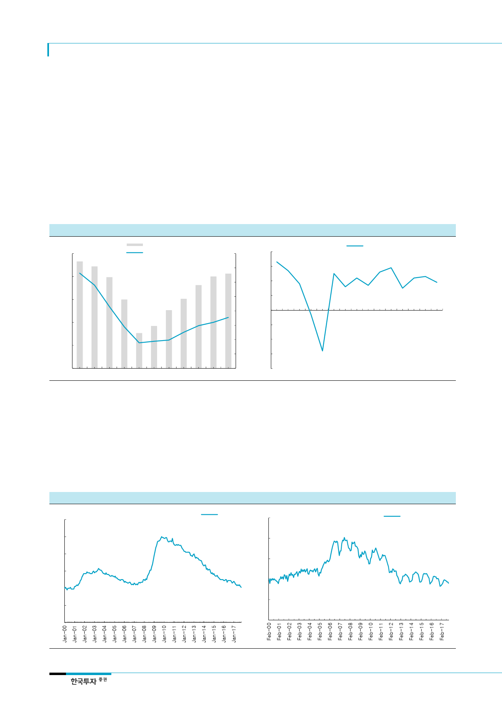

두산밥캣(241560)
II. 북미: 주택시장은 구조적 upcycle
구매력은 좋아졌는데,
주택재고는 부족
1. 시장은 계속 좋았었다, 밥캣이 부진했을 뿐
북미지역이 매출의 70%를 차지한다. 그 중에서도 가장 큰 비중을 차지하는 compact 제품
의 최대 수요처는 주택건설 시장이다. 주택지표 중 compact 매출액과 가장 연관성이 높은
것이 주택착공지표(housing starts)다. 주택착공지표는 2005년 2백만호를 정점에서 줄어
들어 금융위기를 거친 후 2009년 5십만호까지 줄었다. 이후 경기 회복과 함께 점진적으로
늘어나 2017년에는 백만호까지 늘어났다. 최근 몇 년간 연속으로 증가했고, 미국의 금리
인상에 따라 주택시장 침체 우려가 있지만 여전히 peak대비 절반 수준이다.
[그림 8] 주택착공지수와 compact 장비 매출 – 밀접한 상관성
[그림 9] 미국 GDP 성장률 및 IMF 전망 – 2% 수준의 안정적인 성장률
(천호)
2,500
2,000
미국 compact 판매량(우)
주택착공지수(좌)
(천대)
160
140
120
(%)
4 3.3
2.7
3
1.8
2
GDP 성장률
2.9
2.5
2.6
2.2
2.2 2.3
1.6
1.7
1.5
1.9
1,500
1,000
100
1
80
0
60
(1)
-0.3
500
40
(2)
-2.8
20
(3)
0
0
2005 2006 2007 2008 2009 2010 2011 2012 2013 2014 2015
자료: US Census Bureau, Yengst Association, 한국투자증권
(4)
2005
2007
2009
자료: IMF, 한국투자증권
2011
2013
2015 2017F 2019F
주택구매욕구 큰 밀레니얼 세
대가 본격적으로 구매층으로
등장해 수요 부추길 것
주택착공지표가 지속적으로 상승한다고 보는 근거는 주택 수급 불균형 때문이다. 미국 경
기가 좋아지면서 실업률이 낮아졌고 국민들의 구매력은 높아졌다. 또한 1980~2000년대
에 태어난 밀레니얼(millennial)세대 들은 어떤 그룹보다 높은 주택구매에 대한 욕구가 강
하다. 이들은 주거기능 이외에도 장기 투자 대상으로써 주택을 바라본다. 현재 밀레니얼
세대들이 경제적으로 본격적으로 주택구입자로 등장하기 시작해가는 상황이다. 그러나 현
재 주택재고수준은 [그림 11]처럼 사상 최저다. 수요는 커지는데 공급은 충분치 않다.
[그림 10] 미국 실업률 – 실업률 낮아지고 경기 좋아지는데
(%)
12
실업률
10
8
6
4
2
0
[그림 11] 미국 주택재고 – 미국 주택재고는 사상 최저 수준
(%)
5
주택재고율
4
3
2
1
0
자료: US Census Bureau, 한국투자증권
4
자료: US Census Bureau, 한국투자증권